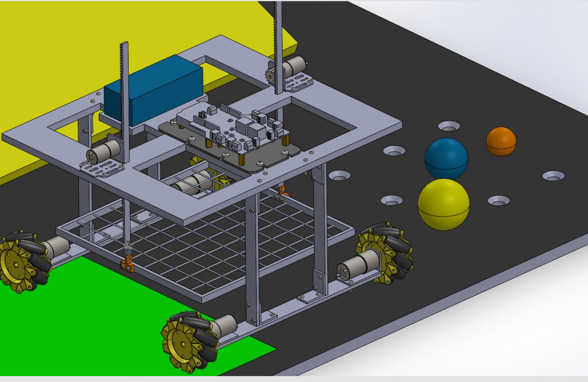
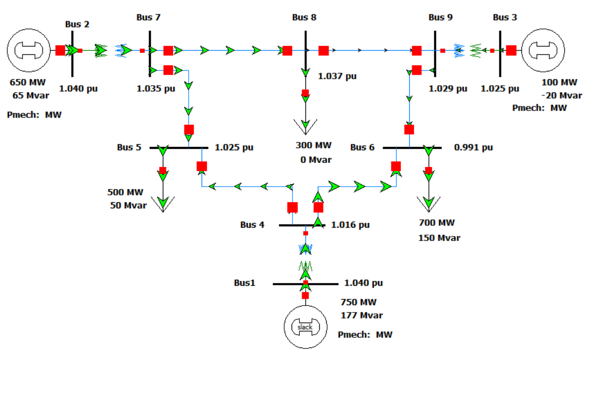
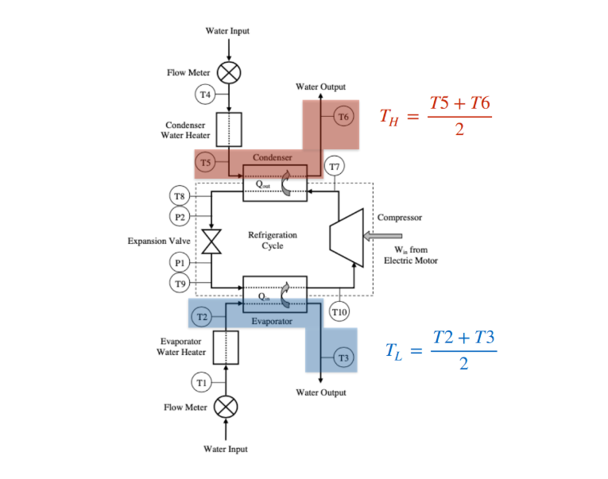
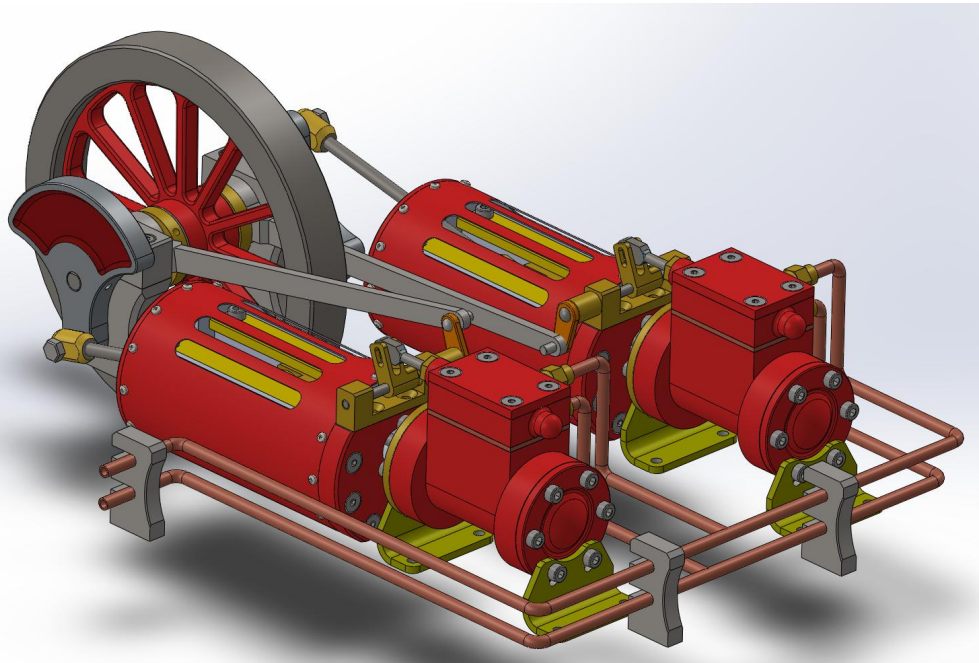
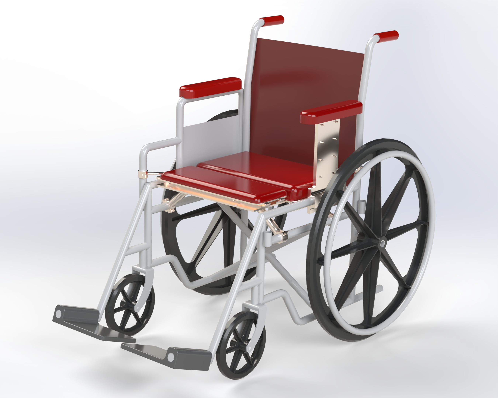

Warman Design & Build
Designed and manufactured a competition robot within strict size, cost and performance constraints.
View case study ↗Mechanical engineering - Power & energy systems
I'm Kieran, a third year Mechanical Engineering student at Monash University, with a minor in Power and Energy Systems. I have a strong passion for problem solving and applying my engineering knowledge and skills to solving problems and creating designs. I am currently looking for an internship and other opportunites in the industry.
Selected work
Four projects spanning many aspects of my degree, showing how I approach design, modelling, programming and technical problem-solving.

Designed and manufactured a competition robot within strict size, cost and performance constraints.
View case study ↗
Modelled voltage control, renewable integration and reactive power compensation in PowerFactory and PowerWorld.
View case study ↗
Characterised a compressor based on efficiency and simulated how it would behave in different conditions.
View case study ↗
Designing a 600 mm automated string-art machine integrating mechanical design, motor selection and embedded control.
View case study ↗Design portfolio
A selection of assemblies, mechanisms and technical drawings created in SolidWorks.


About me
I chose a minor in Power and Energy Systems to complement my mechanical engineering studies and better understand how mechanical and electrical systems work together. I have a strong passion for all of the engineering work I do and throughly enjoy widening my knowledge in different fields as much as I possibly can. I enjoy working on challenging real projects where I can see the result of all of my effort.
Alongside university, tutoring mathematics and physics to highschool students has strengthened my ability to explain technical ideas clearly and adapt my approach to different people.
Download resumeSolidWorks · FEA · AS 1100 drawings · Machine design · Fluid mechanics
Python · MATLAB · NumPy · Numerical methods · Machine learning
PowerFactory · PowerWorld · Load-flow analysis · Arduino · ESP32
Terry F. Berreen Award
Excellence in Engineering Dynamics
Let’s connect
I’m always keen to discuss engineering opportunities, technical projects and new challenges.